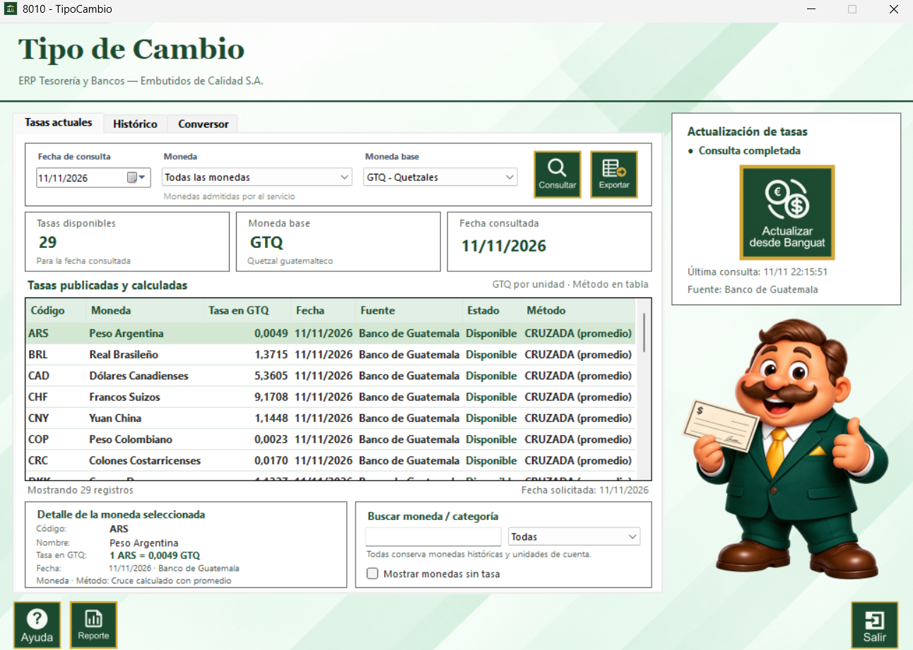
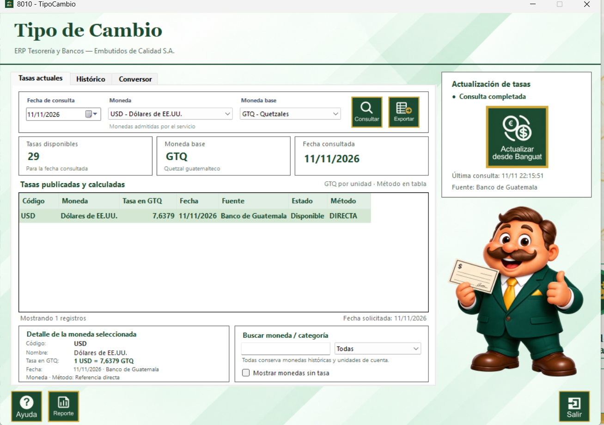
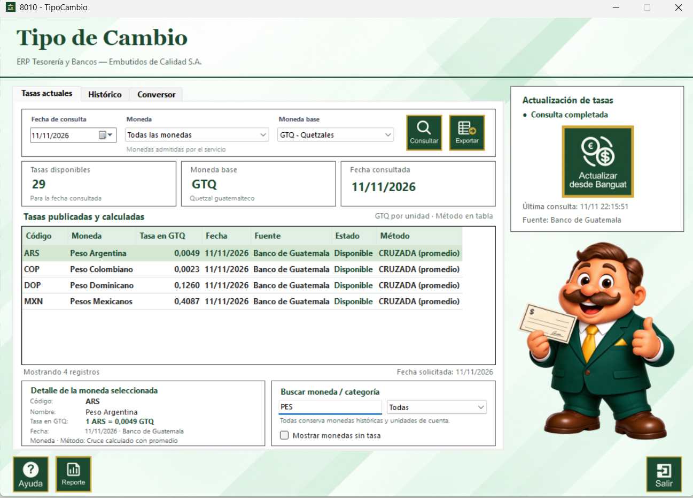
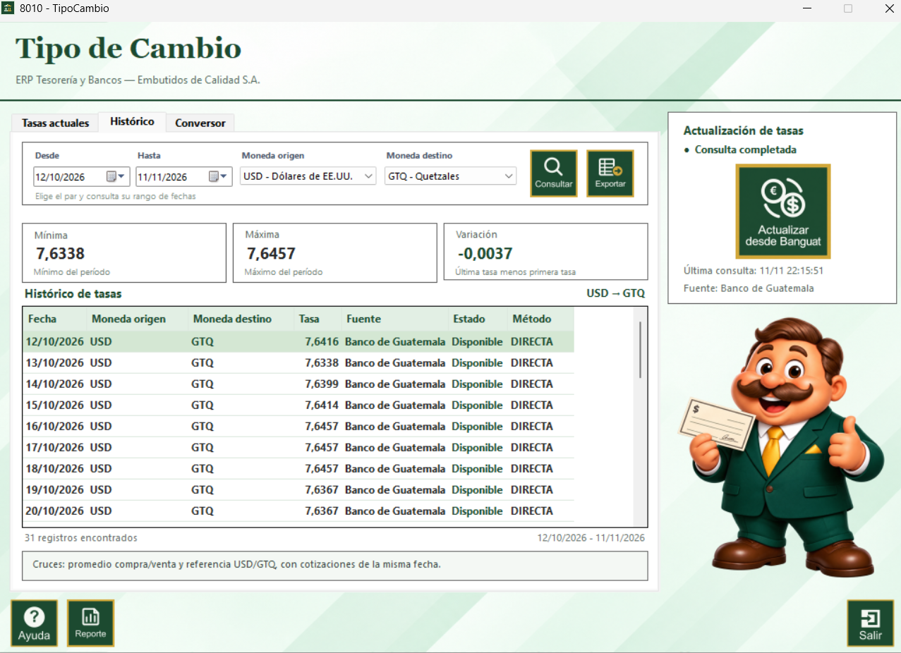
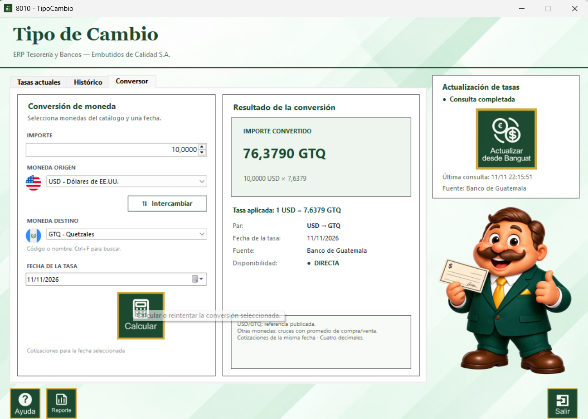

El proceso Tipo de Cambio permite consultar las cotizaciones del Banco de Guatemala, analizar su comportamiento histórico y convertir importes entre monedas. La ventana corresponde al proceso 8010.
La tasa se muestra en GTQ por una unidad de la moneda seleccionada. Cuando existe una cotización directa se identifica como DIRECTA; para otras monedas se calcula un cruce con el promedio de compra y venta y la referencia USD/GTQ de la misma fecha.
1. Abra la pestaña Tasas actuales.
2. Seleccione la fecha de consulta, la moneda o “Todas las monedas” y la moneda base.
3. Presione Consultar. El sistema muestra el total de tasas disponibles, la moneda base, la fecha consultada y la tabla de tasas publicadas y calculadas.
4. La tabla identifica código, nombre, tasa en GTQ, fecha, fuente, estado y método.

Para revisar una sola moneda, elija el código en el selector y presione Consultar. El detalle inferior muestra el código, nombre, tasa, fecha, fuente y método de cálculo.

Escriba el código o parte del nombre en Buscar moneda / categoría. El selector permite conservar todas las categorías, y la casilla Mostrar monedas sin tasa incluye las monedas que no tienen cotización para la fecha consultada.

Presione el botón Actualizar desde Banguat para consultar nuevamente la fuente oficial. La fecha, hora de última consulta y fuente aparecen en el panel derecho. Después de actualizar, vuelva a presionar Consultar para refrescar la tabla de la pestaña.
La actualización necesita conexión a internet. Si el servicio no responde, conserve las tasas históricas disponibles y vuelva a intentar más tarde.
La pestaña Histórico permite estudiar un par de monedas dentro de un rango de fechas.
1. Seleccione las fechas Desde y Hasta.
2. Seleccione moneda origen y moneda destino.
3. Presione Consultar.
4. Revise los indicadores Mínima, Máxima y Variación. La variación corresponde a la última tasa menos la primera tasa del período.
5. La tabla conserva fecha, moneda origen, moneda destino, tasa, fuente, estado y método.

Use la pestaña Conversor para convertir un importe con una tasa de una fecha específica.
1. Escriba el importe.
2. Seleccione la moneda origen.
3. Seleccione la moneda destino.
4. Seleccione la fecha de la tasa.
5. Presione Calcular. El resultado muestra el importe convertido, la tasa aplicada, el par, la fecha, la fuente y la disponibilidad.
El botón Intercambiar cambia moneda origen por moneda destino. Si no existe una cotización válida para la fecha, el sistema no calcula y solicita corregir la selección.

GTQ: utiliza la identidad 1 a 1.
USD/GTQ: utiliza la referencia directa publicada.
Otros cruces: utiliza el promedio de compra y venta junto con la referencia USD/GTQ de la misma fecha.
Todos los importes y tasas se muestran con cuatro decimales. La columna Método permite distinguir una referencia directa de una tasa cruzada.
Exportar guarda en CSV la información visible de la pestaña actual. Reporte abre el formulario de reporte del módulo con la tabla consultada y su vista previa de impresión.
Si no hay registros consultados, primero debe realizar una consulta antes de generar el reporte.
Ayuda abre esta guía. Salir cierra la ventana de Tipo de Cambio.